Mac中的Shadowsocks客户端
Mac下的Shadowsocks客户端也有不止一个。
用过的有：
ShadowsocksX- 对应下载地址是：ShadowsocksX-2.6.3.dmg
ShadowsocksX-NG- 之所以换用ShadowsocksX-NG：
- 某ss服务商改用新加密算法
chacha20-ietf-poly1305后，而ShadowsocksX不支持，所以才换用ShadowsocksX-NG的。
- 某ss服务商改用新加密算法
- 之所以换用ShadowsocksX-NG：
两个版本的功能和使用方式，基本上没太大区别。
下面主要来介绍ShadowsocksX-NG的使用。
Mac版ss客户端：ShadowsocksX-NG
下载和安装ShadowsocksX-NG
从Github中下载：Releases · shadowsocks/ShadowsocksX-NG
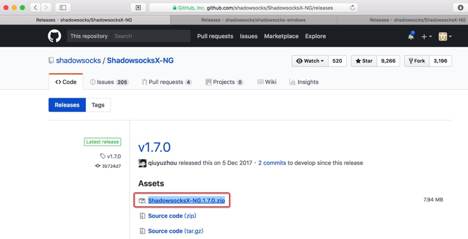
解压下载得到的ShadowsocksX-NG.1.7.0.zip得到app文件：ShadowsocksX-NG.app
把ShadowsocksX-NG.app拖动到应用程序Application文件夹，即可：
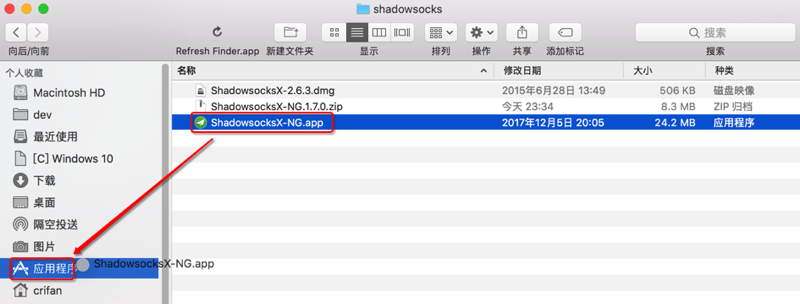
运行ShadowsocksX-NG
安装后，从LaunchPad中：
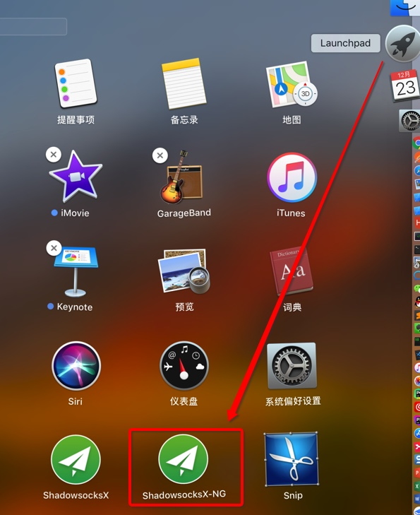
或从 应用程序中也可以找到：
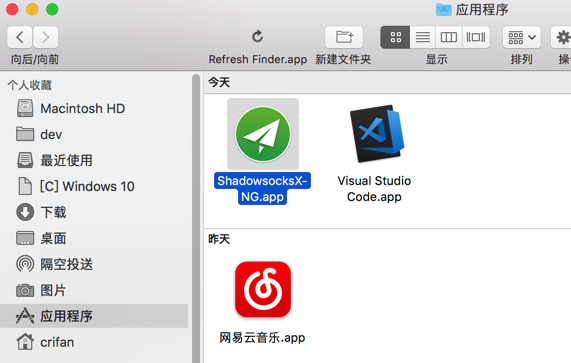
Shadowsocks-NG，点击以启动：
当前Shadowsocks-NG的版本是最新的1.7.0:
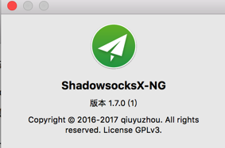
ShadowsocksX-NG中添加服务器配置信息
如之前介绍，有三种办法添加ss服务器的配置信息：
- 一次性导入json配置文件
- 可以添加所有的服务器配置
- 通过扫描二维码添加
- 只能一个个添加服务器
- 手动输入服务器的域名，密码，加密方式等信息
- 只能一个个添加服务器
下面分别介绍：
一次性导入json配置文件
可以导入（别人配置好后导出的）json配置文件，可以实现一次性批量导入所有服务器信息
服务器 - xxx -> 导入服务器配置文件
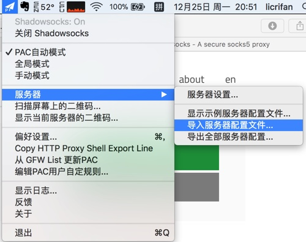
然后选择（之前别人整理好的，导出的）json配置文件：
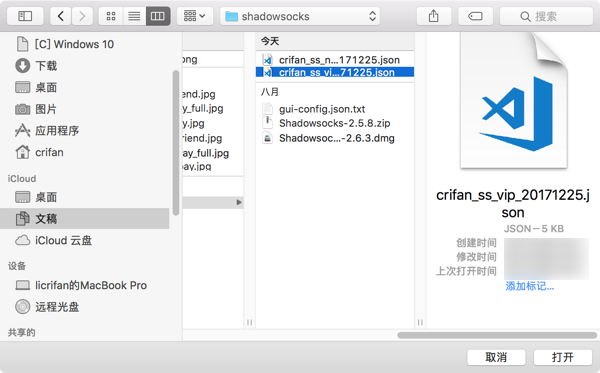
稍等，提示导入成功：
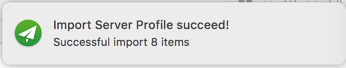
即可（一次性批量）导入对应（多个）服务器：
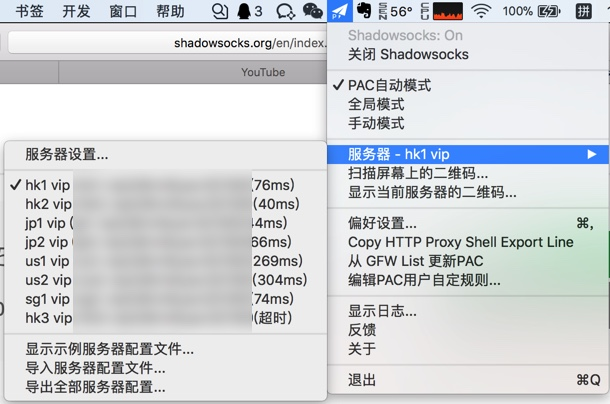
通过扫描二维码添加
前提是已经有了对应的服务器的二维码
购买了ss服务后，可以通过后台管理页面中找到对应二维码。
此处去登录后台管理页面，点击二维码：
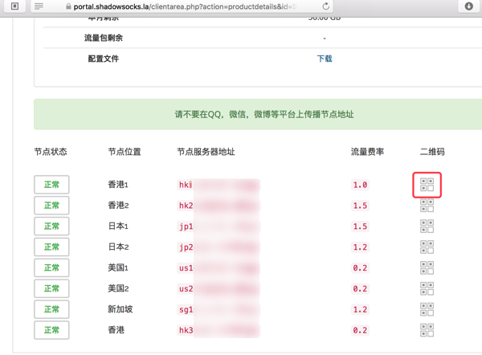
会弹出二维码：
然后点击ShadowsocksX-NG的菜单 -> 扫描屏幕上的二维码
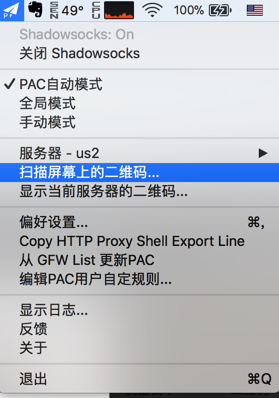
会自动识别屏幕上（刚才页面中弹出的）二维码，扫描成功后会提示：
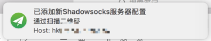
如此，每个服务器都点击一下对应二维码，用Shadowsocks-NG去扫码，即可添加对应服务器。
手动输入服务器的域名，密码，加密方式等信息
点击 服务器 - xxx -> 服务器配置
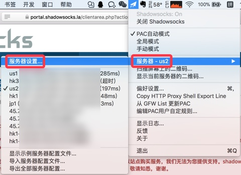
会弹出设置界面，点击左下角的加号➕，然后填入对应配置信息：
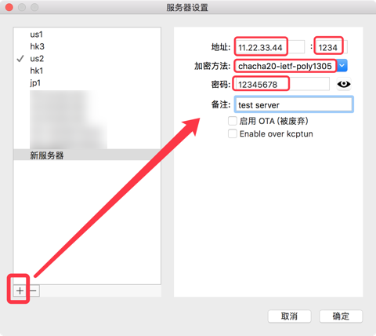
- 地址：[必填]服务器的IP或域名地址
- 对应着：
节点服务器地址
- 对应着：
- 端口：[必填]端口号
- 对应着：
服务端口
- 对应着：
- 加密方法：[必填]（现在最新的加密方法是）
chacha20-ietf-poly1305- 对应着：
加密方式
- 对应着：
- 密码：[必填]密码
- 对应着：
登录密码
- 对应着：
- 备注：[选填]
- 自己填个自己觉得容易识别的好记的名字
- 比如： hk1
然后点击确定。
用同样方法，一个个的去添加其他的服务器配置。
ShadowsocksX-NG其他使用相关的配置
在添加了ss的服务器之后，接着去介绍如何使用ShadowsocksX-NG客户端。
打开/启用Shadowsocks
先去打开SS的客户端，选择打开Shadowsocks
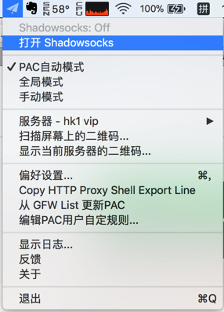
如此，即可去畅游互联网了，可以去打开本来无法访问的而现在可以访问的，比如：
当然，下面还是可以去根据需要去更改对应的设置的：
选择工作模式
如果不想要看下面的模式的详细解释，那么直接使用默认的PAC自动模式即可。
关于不同工作模式的解释：
PAC自动模式- 让Shadowsocks-NG去（根据设置中的GFW List）自动识别在打开网页时，是否需要翻墙
- 推荐：普通小白用户使用此模式
- 比如打开国内的百度，腾讯，网易等网站，不需要翻墙
- 比如打开国外的google，youtube等需要翻墙
- 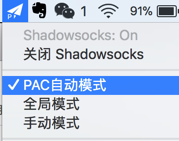
- 让Shadowsocks-NG去（根据设置中的GFW List）自动识别在打开网页时，是否需要翻墙
全局模式- 强制对于所有打开的网页都是用翻墙
- 优点和使用场景：对于部分页面，有些网页用自动模式打不开，则可以尝试全局模式，往往可以打开
- 缺点：如果对于本身无需翻墙的国内网站，比如百度也强制翻墙的话，访问速度可能会降低
- 强制对于所有打开的网页都是用翻墙
手动模式- 提示：一般人很少用
- 设置为手动模式后，需要自己去
编辑PAC用户自定规则，添加自己定义的规则，决定哪些页面翻墙，哪些页面不翻墙。
选择用哪个服务器去翻墙
在添加了多个服务器后，可以点击 服务器 - xxx -> 去选择切换为自己需要的服务器：
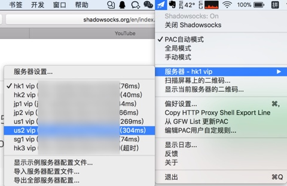
即可切换到（自己平时经常使用的，觉得速度和稳定性都不错的）us2的服务器：
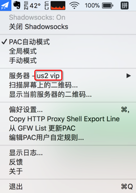
设置开机启动
想要每次开机自动启动的话，可以去：偏好设置
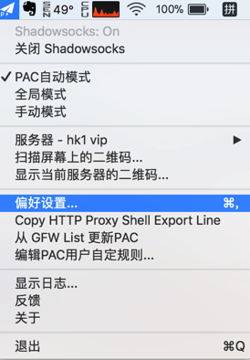
勾选上开机启动
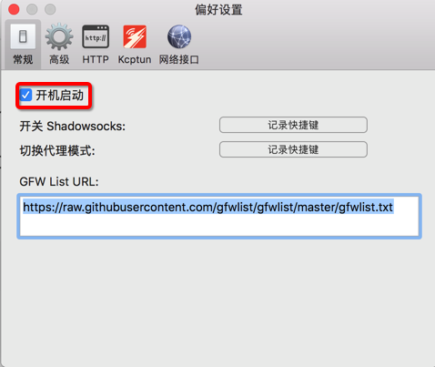
把当前所使用的ss服务器信息分享给别人
如果想要把当前你正在使用的ss的服务器的（地址，端口，密码，加密方式等）配置信息分享给别人，则可以：
选择显示当前服务器的二维码
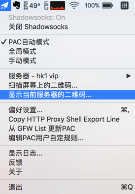
即可显示出当前服务器的二维码：
供其他人使用。
比如：别人用手机中的ss客户端去扫码添加该ss服务器到自己的客户端中。